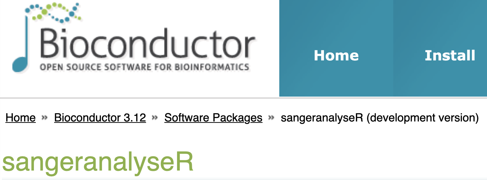

Installation¶
Install from Bioconductor¶
sangeranalyseR is on Bioconductor 3.12 development now.

Figure 1. sangeranalyseR on Bioconductor 3.12 development.¶
To install this package, start R (version "4.0") and enter:
if (!requireNamespace("BiocManager", quietly = TRUE))
install.packages("BiocManager")
# The following initializes usage of Bioc devel
BiocManager::install(version='devel')
BiocManager::install("sangeranalyseR")
Install the development version¶
If you haven't installed the devtools package before, please install it first:
install.packages("devtools")
Then run the following code in your R console to install the newest version from Github.
library(devtools)
install_github("roblanf/sangeranalyseR", ref = "develop")
library(sangeranalyseR)
After installing sangeranalyseR, load it in R console.
library(sangeranalyseR)
Now, you are ready to go !
Where to go from here ?¶
Please continue to the Quick Start Guide or the more detailed Beginners Guide.